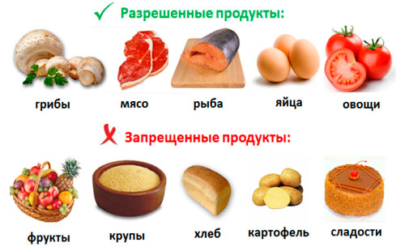

Немного о диетах кремлевских и разных ...

По материалам книги Вилены Александровны Гуровой
" Диета кремлевских политиков без грифа «Секретно». "
А также из других источников Интернет
Уважаемый Читатель - после ознакомления с Книгой
рекомендую Вам заказать ее бумажное издание.
Данная диета была разработана для военных и астронавтов США, но, видимо, благодаря деятельности нашей разведки вскоре стала достоянием кремлевской элиты. Многим российским политикам эта диета помогла не только сбросить лишние килограммы, но и стать более энергичными и работоспособными. Ведь диета не требует изнуряющего голодания, наоборот, позволяет есть то, что вы любите, и при этом интенсивно худеть.
- Едим вкусно, худеем быстро!.
- Люблю вкусно поесть, но хочу быть стройной.
- Глава 1. Диета американских астронавтов и российских политиков.
- Глава 2. Худейте на здоровье.
- Глава 3. Гепард и корова, или в чем суть диеты.
- Глава 4. Биохимический состав продуктов.
- Белки.
- Жиры.
- Углеводы.
- Блюда из мяса и птицы.
- Бобовые, крупы, каши, макароны.
- Рыба, морепродукты.
- Колбасы, мясопродукты.
- Блюда из овощей.
- Свежие овощи и зелень.
- Орехи и семечки.
- Молочные продукты.
- Сладости.
- Соки, компоты, варенье, джемы, сухофрукты.
- Свежие фрукты, ягоды.
- Хлебобулочные, сдобные и бараночные изделия, выпечка, торты.
- Сыры.
- Яйца, продукты из яиц.
- Алкогольные напитки.
- Глава 5. Расплата за «сладкую» жизнь, или Осторожно, чистый углевод!.
- Глава 6. Дефицит витаминов и минеральных солей вам не грозит.
- Глава 7. Сколько у. е. стоит ваш обед.
- Глава 8. Ошибки, которых можно избежать.
- Глава 9. Что есть – понятно. А что пить?.
- Глава 10. Другие низкоуглеводные диеты, или При чем тут Аткинс, Агастон и Квасьневский.
- Глава 11. Всем ли подходит низкоуглеводная диета.
- Глава 12. Оцените результаты анализов.
- Глава 13. Низкоуглеводная диета при сахарном диабете.
- Глава 14. Как избежать запоров.
- Глава 15. Низкоуглеводная диета при проблемной коже.
- Глава 16. Как поддержать баланс микроорганизмов при смене рациона.
- Глава 17. Низкоуглеводная диета при болезнях желудка.
- Глава 18. Размышления на тему холестерина.
- Глава 19. Диета Кремля против железодефицитной анемии.
- Глава 20. Психологические аспекты низкоуглеводной диеты, или Как победить лень и нерешительность.
- Глава 21. Специи придадут диете пикантность.
- Глава 22. Что сегодня в меню?.
- Глава 23. В вашу поваренную книгу.
- От теории к практике!.